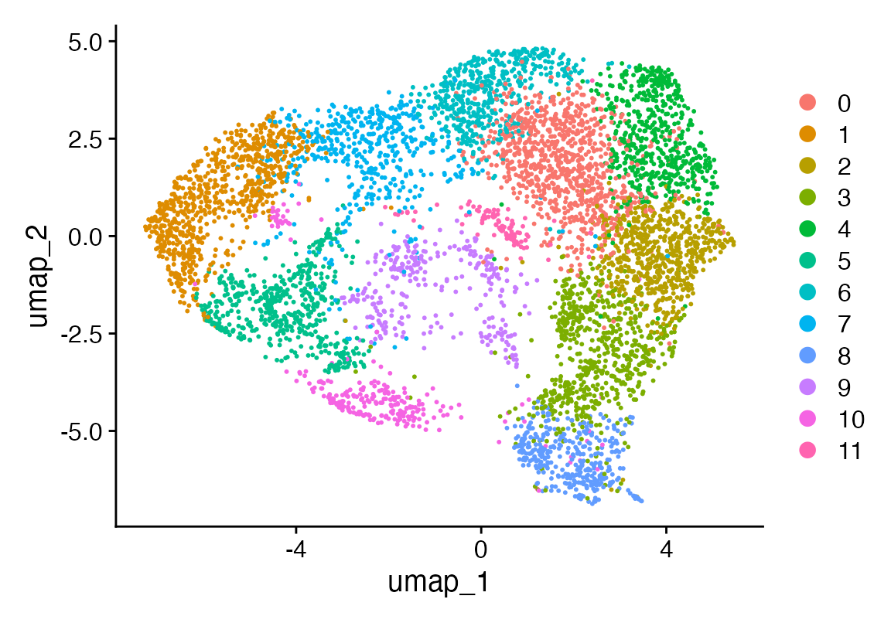
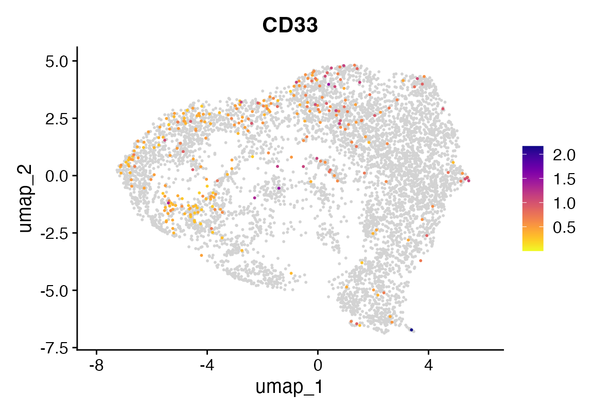
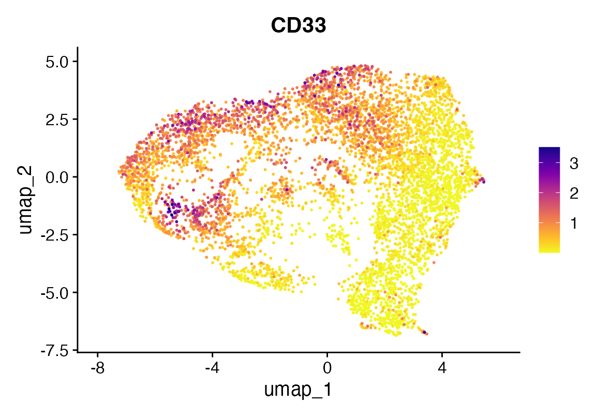
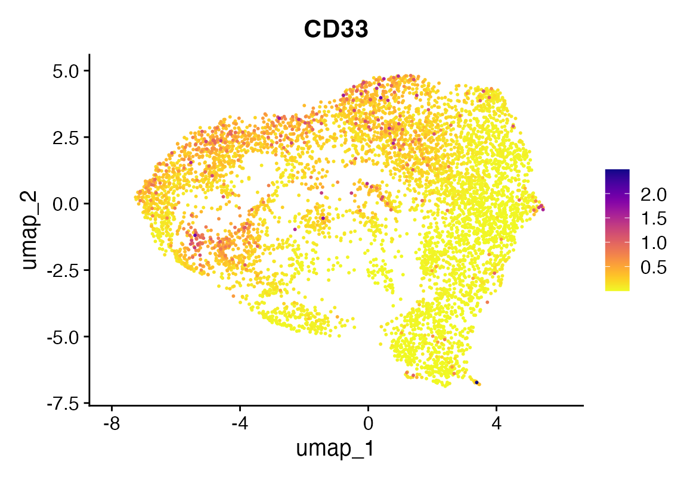

Magic in Rust
2025-05-06
magic.RmdInstalling Rust
First you need to have an updated Rust installation. Go to this site to learn how to install Rust.
Installing rustytools
You will need to have the devtools package installed…
devtools::install_github("furlan-lab/rustytools", force=T)Overview of Magic implemented in Rust
(“Markov Affinity-based Graph Imputation of Cells” – van Dijk et al., 2018)
| Symbol | Size | Meaning |
|---|---|---|
| X | n × g | raw (or PCA-reduced) expression; rows = cells, cols = genes |
| d(i,j) | – | Euclidean (or cosine) distance between cell i and j in PCA space |
| σᵢ | – | local scale for cell i (distance to its k-th nearest neighbour) |
| A | n × n | symmetrised, locally scaled affinity (“heat”) matrix |
| D | n × n | diagonal degree matrix, Dii = ∑jAij |
| P = D⁻¹A | n × n | row-stochastic Markov transition matrix |
| t | – | diffusion time (walk length) |
| Ŷ | n × g | imputed expression after diffusion |
1 k-NN graph in latent space
Compute k nearest neighbours in the m-dimensional PCA space (typically k ≈ 30, m ≈ 100).
2 Adaptive Gaussian kernel
For each edge (i, j) in that graph set
$$
A_{ij} ;=; ! A_{ij}=0; .
$$
Local bandwidths σᵢ make the kernel anisotropic so dense and sparse regions of the manifold are treated equally.
4 Diffusion (raise to power t)
There are two equivalent views:
-
Spectral Diagonalise P = Ψ Λ Ψ⁻¹ with eigenvalues 1 = λ₀ > λ₁ ≥ λ₂ … Then
Small eigenmodes (high-frequency noise) decay as λₖᵗ.
Random-walk Entry (i,j) of Pᵗ is the probability that a random walk of length t starting at cell i ends in cell j.
5 Imputation by heat propagation
Apply the diffusion operator to every gene vector:
Each imputed expression value becomes a weighted average over the t-step neighbourhood, smoothing drop-outs while respecting manifold structure.
Relation to the continuous heat equation
On a smooth data manifold M, the generator L = I – P approximates the Laplace–Beltrami operator ΔM. Diffusion time t therefore controls how far one solves the heat-equation
MAGIC performs this on a graph and stops at a user-chosen t (often 2–6); too small → little denoising, too large → over-smoothing.
Where our Rust kernel fits
Steps 1–3 (k-NN, kernel, Markov row-normalisation) happen in
R/Python. The Rust function diffuse_expr_r() you now have
implements step 4 + 5:
(P, X, t) ──► Ŷ = Pᵗ · XIt expects P already row-stochastic; raising to power t and the matrix–vector multiply are done in parallel for speed and memory efficiency.
Blended MAGIC imputation
We have added an additional lever which controls the strength of the diffusion process.
Let
- be the original (cells × genes) expression matrix,
- the row-stochastic diffusion operator,
- the number of diffusion steps,
- the fully-diffused matrix,
- the blending weight.
We define the blended imputation
$$ X_{\rm imp}(\alpha) \;=\; (1 - \alpha)\,X \;+\; \alpha\,\widetilde X \;=\; (1 - \alpha)\,X \;+\; \alpha\,P^{\,t}\,X \;\in\mathbb{R}^{n\times g}. $$
Special cases
: $X_{\rm imp}(0) = X$. No diffusion—returns the raw data unchanged.
: $X_{\rm imp}(1) = P^{\,t}X$. Full MAGIC imputation.
: Partial smoothing. Each entry is a convex combination of the raw and diffused values.
How to run MAGIC in R/Rust
First we take some data, subset to the tumor cells that express modest levels of CD33. Lets see how they look after Magic.
suppressPackageStartupMessages({
library(Seurat)
library(scCustomize)
library(rustytools) # your package exposing diffuse_expr_r()
library(magrittr)
})
seu <- readRDS("~/Fred Hutch Cancer Center/Furlan_Lab - General/experiments/patient_marrows/annon/AML101/aml101.cds")
seu$sb <- seu$geno %in% "0" & seu$seurat_clusters %in% c("0", "1", "2", "3", "4", "11")
#DimPlot(seu, group.by = "sb")
seu <- seu[,seu$sb]
seu <- NormalizeData(seu, verbose = F) %>% ScaleData(verbose = F) %>% FindVariableFeatures(verbose = F) %>% RunPCA(npcs = 100, verbose = F)
ElbowPlot(seu, ndims = 100)
seu <- FindNeighbors(seu, dims = 1:35, verbose = F) %>% FindClusters(verbose = F) %>% RunUMAP(dims = 1:35, n.epochs = 500, verbose = F)
DimPlot(seu)
seu <- seurat_magic(seu, alpha = 1)
DefaultAssay(seu) <- "RNA"
FeaturePlot_scCustom(seu, "CD33")
DefaultAssay(seu) <- "MAGIC"
FeaturePlot_scCustom(seu, "CD33")
Changing parameters
An alpha of 1 might be too much. We can dial it back with an alpha of 0.3 and even further by dropping t to 2.
seu <- seurat_magic(seu, alpha = 0.3)
DefaultAssay(seu) <- "MAGIC"
FeaturePlot_scCustom(seu, "CD33")
seu <- seurat_magic(seu, alpha = 0.3, t = 2)
DefaultAssay(seu) <- "MAGIC"
FeaturePlot_scCustom(seu, "CD33")